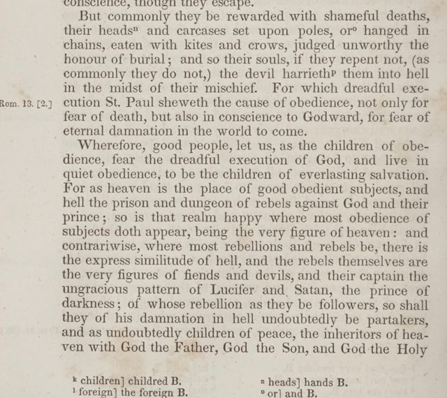

“Hell the prison and dungeon of rebels” (Third Part, p. 512)
English: Philadelphia 1855, p. 512, scan. Highlighted: Lecky’s second quotation.

… But commonly they be rewarded with shameful deaths, their heads and carcases set upon poles, or hanged in chains, eaten with kites and crows, judged unworthy the honour of burial; and so their souls, if they repent not, (as commonly they do not,) the devil hurrieth them into hell in the midst of their mischief. …
Wherefore, good people, let us, as the children of obedience, fear the dreadful execution of God, and live in quiet obedience, to be the children of everlasting salvation. For as heaven is the place of good obedient subjects, and hell the prison and dungeon of rebels against God and their prince; so is that realm happy where most obedience of subjects doth appear, being the very figure of heaven: and contrariwise, where most rebellions and rebels be, there is the express similitude of hell, and the rebels themselves are the very figures of fiends and devils, and their captain the ungracious pattern of Lucifer and Satan, the prince of darkness …
“Satan, the first founder of rebellion” (conclusion, p. 519)
English: p. 519, scan. Highlighted: Lecky’s first quotation.
Wherefore to conclude, let all good subjects, considering how horrible a sin against God, their prince, their country, and countrymen, against all God’s and man’s laws, rebellion is, being indeed not one several sin, but all sins against God and man heaped together; considering the mischievous life and deeds, and the shameful ends and deaths of all rebels hitherto, and the pitiful undoing of their wives, children, and families, and disheriting of their heirs for ever; and, above all things, considering the eternal damnation that is prepared for all impenitent rebels in hell with Satan, the first founder of rebellion, and grand captain of all rebels; let all good subjects, I say, considering these things, avoid and flee all rebellion, as the greatest of all mischiefs …
Lecky’s first quotation turns the participial phrase into a sentence (“Eternal damnation is prepared for …”).
Backlinks
Every place in Rationalism in Europe that links to this page (generated automatically when the site is built).
- Chapter V: note 87